| 日付 | 2018年4月22日（日） |
|---|---|
| 山域 | 安蘇山塊 |
| メンバー | 家族（妻、長女・7歳、長男・4歳） |
| 山行形態 | 子連れ日帰り |
| アクセス | 車 |
| ルート (Map) | 不死熊橋 (8:59) - (11:00) 根本山 (11:30) - (12:09) 十二山 - (12:41) 熊鷹山 (13:16) - (13:33) 林道 - (14:48) 不死熊橋 |
今年は気温が高いためアカヤシオが例年より早く咲いているらしい。
そのあたりの情報を踏まえて根本山に行ってみることにする。
アカヤシオをはじめ様々なツツジが咲く山で、
前々から一度登ってみたいと思っていた。
少々コースタイムが長いためこれまで敬遠していたが、
息子が4時間半程度歩けるようになってきたため、今歩くのにちょうど良い山だ。
登山口近くの駐車場に車を停める。標高600m。
20台程度は停められるため、めったに満車になることはなさそうだ。
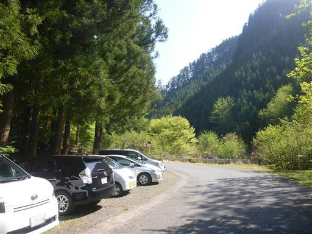
しばらく歩くとコース案内が記載された案内板がある。
ガイドブックにはここまで車で入れるように記載があるが、今は入れないようだ。
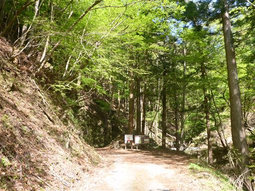
ここからしばらく車道を歩く。新緑が目に眩しい。
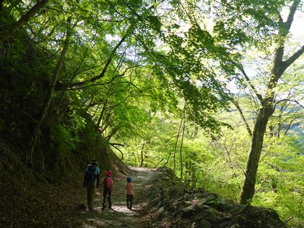
登山口に到着。ここから登山道が始まる。
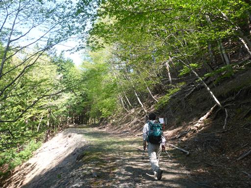
いきなり桧の植林地帯が始まる。少々気分を削がれる登山道だ。
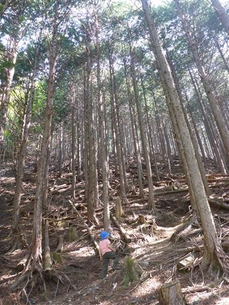
15分ほど登ると植林地帯が終わり、ここから自然林になる。
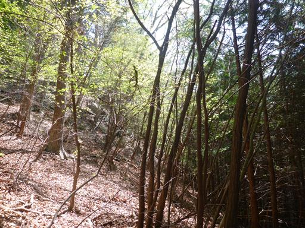
歩きやすい登山道。道はよく整備されている。
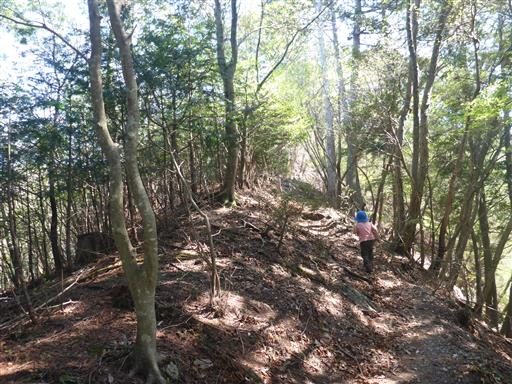
ところどころに祠がある。この山は古来から山岳信仰の対象だった。
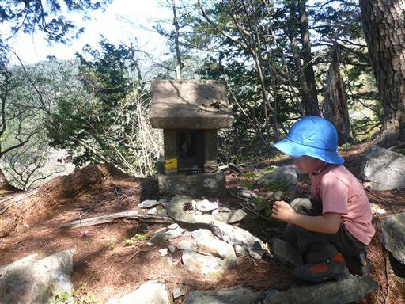
お供え物に松ぼっくりとツツジの花が供えられている。
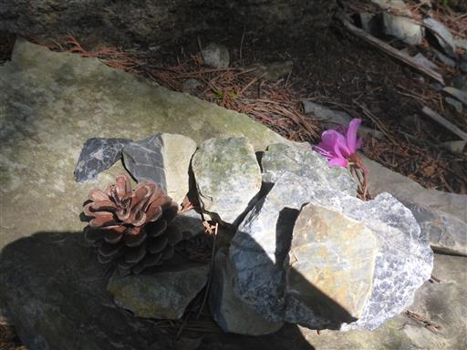
シロヤシオだろうか？シロヤシオが咲くには少々時期が早い気がするが、
白くて小振りの花が咲いている。
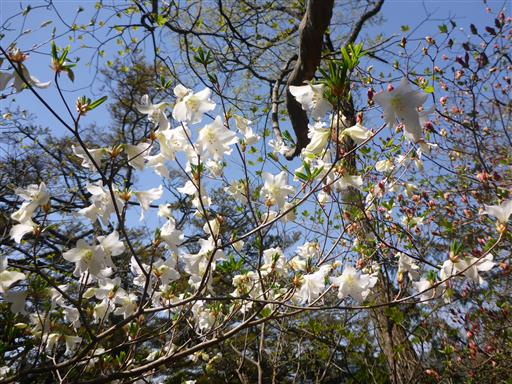
地面には松ぼっくりが大量に落ちている。
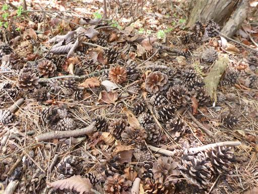
遠くに山桜が咲いているのが見える。
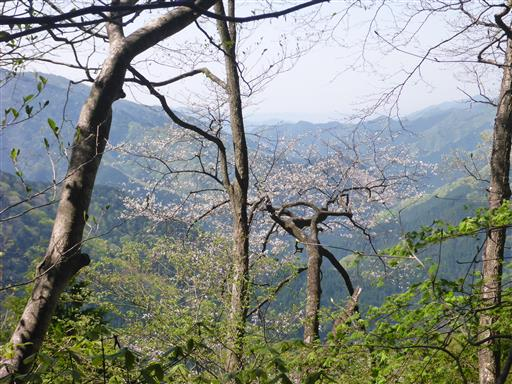
ちょっとした岩場。そんなに難しい場所ではないのだが、
ロープがあると息子はロープに頼ってしまう。

明るい新緑の尾根道。
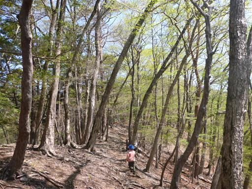
ところどころにミツバツツジが咲いている。
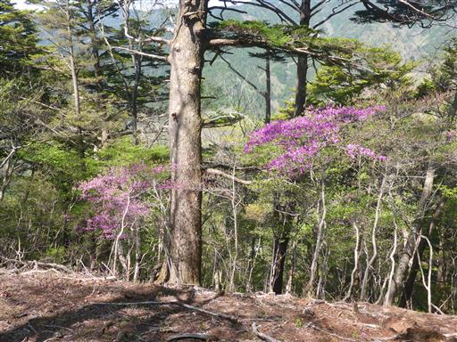
腐った木がボロボロになっている。
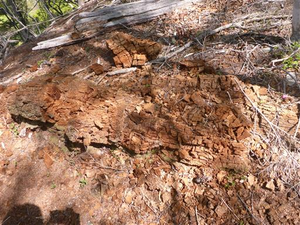
腐った木の欠片で茶色の線が描けることを発見し、石や木に絵を描いて遊んでいる。
ここまで快調に歩いてきたが、暑いからかこの辺りで急にペースが落ちてしまう。
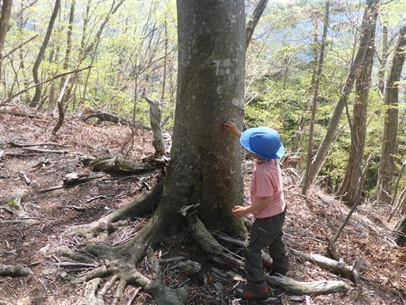
再び尾根の半分は植林地帯になってしまう。
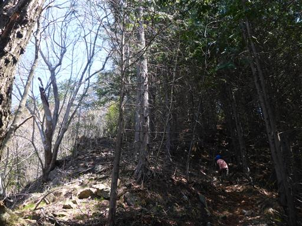
標高を上げて行くとアカヤシオの花がチラホラと咲いているのだが、
尾根の反対側の斜面に咲いているため良く見えないのが残念だ。
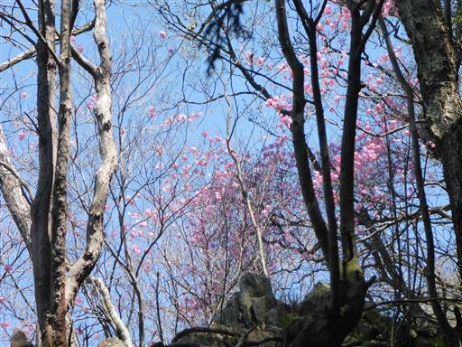
しばらく歩くと植林地帯が終わり再び明るくなる。
アカヤシオの数が増えてきて、花を愛でながら歩いていく。
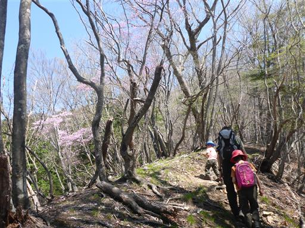
山頂直下の標識。息子は「天狗どこにいたの？」と聞いている。
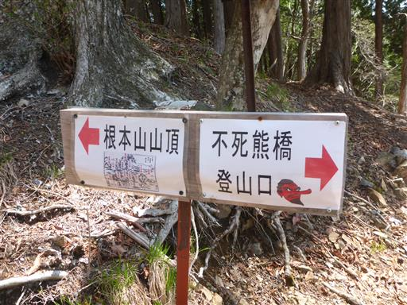
山頂まであとわずか。傾斜は少し急になったが励ましながら歩いていく。
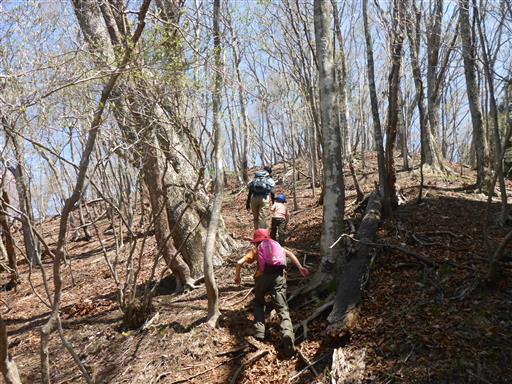
娘が何かの実を拾う。大量に落ちていたが何の実だろうか？
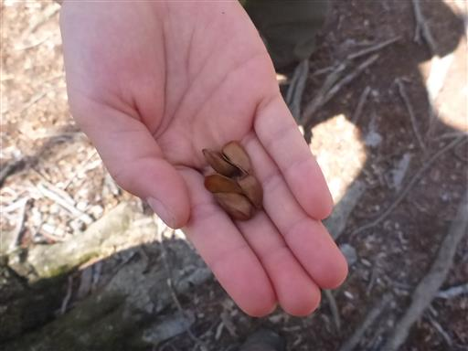
小さな祠。壁がなくなって屋根だけになっている。

満開のアカヤシオ。
中腹は落ちている花が多かったが、山頂付近は今が満開のようだ。
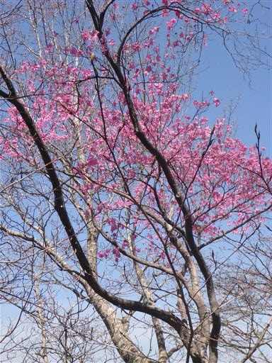
根本山山頂に到着。標高1199m。
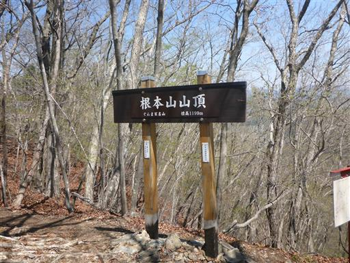
山頂からは満開のアカヤシオが眺められる。
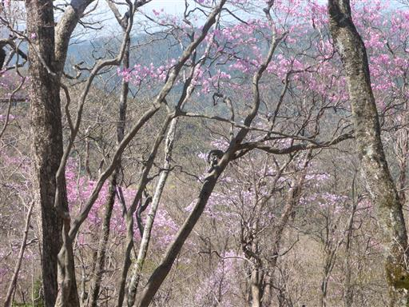
アカヤシオの木の間から見えるのは足尾山塊の袈裟丸山。
袈裟丸山もツツジが咲く山で、いつか行ってみたい。
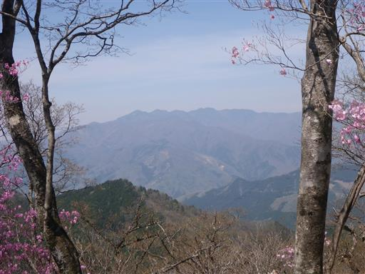
こちらもアカヤシオの間から見える足尾の主峰・皇海山。
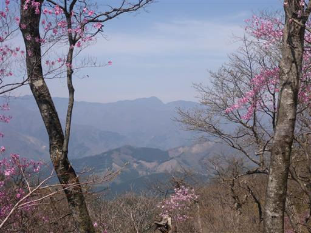
展望はそれほど優れた山ではないが、この時期はアカヤシオの花に包まれる。
花をゆっくり眺めながら軽い昼食休憩をとったら山頂を出発する。
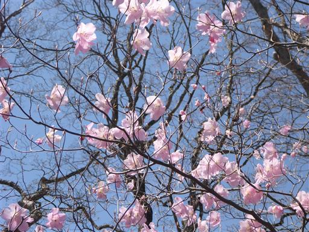
ここから十二山、熊鷹山と縦走する予定。
と言っても三山ともほとんど標高差が無いため、比較的楽なコースだ。
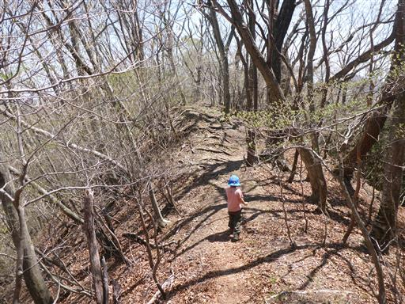
十二山神社。石祠と斧がある。斧はものすごく重い。
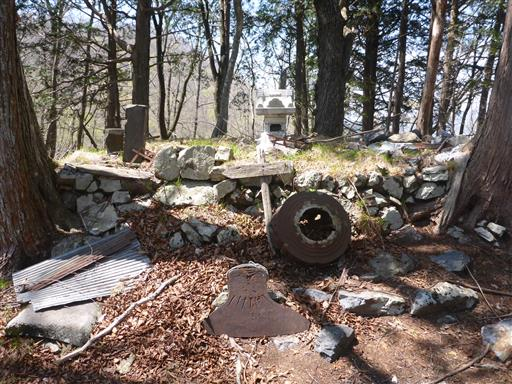
粗末な鳥居。今にも倒れそうだ。
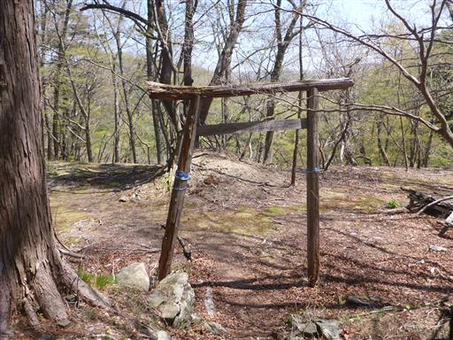
他にも建物があった形跡があるが、壊れてしまっている。
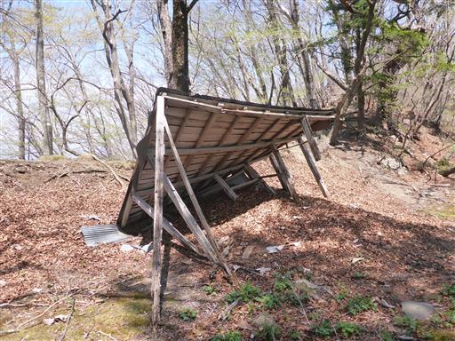
大きな木の空洞を発見。
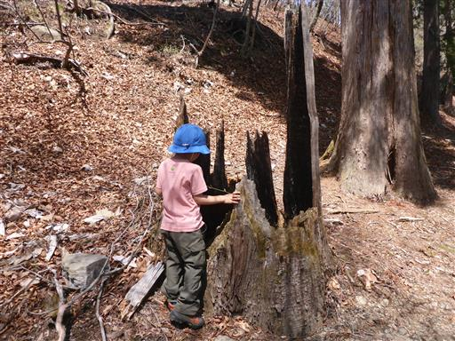
中に入ってみる。
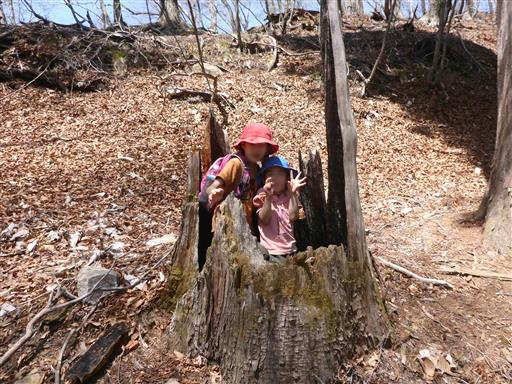
木の内部は真っ黒に焼け焦げているが、雷でも落ちたのだろうか？
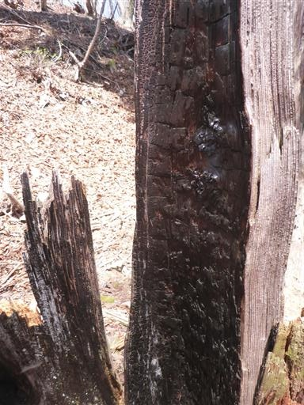
十二山に到着。標高1143m。
展望も何もない山頂。巻道があるため訪れる人は少なそうだ。
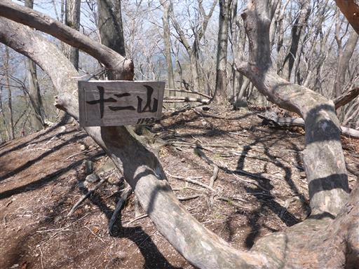
倒れた木に乗って遊びだす。これなら木登りも楽々だ。
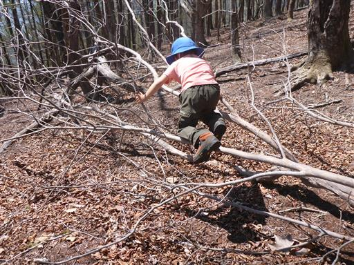
大きな瘤を持った木。
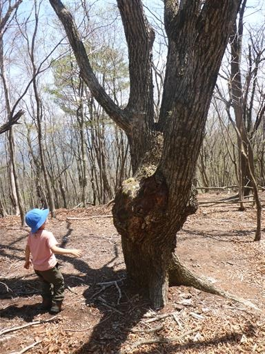
広くて平らな尾根になる。歩いていて気持ちの良い場所だ。
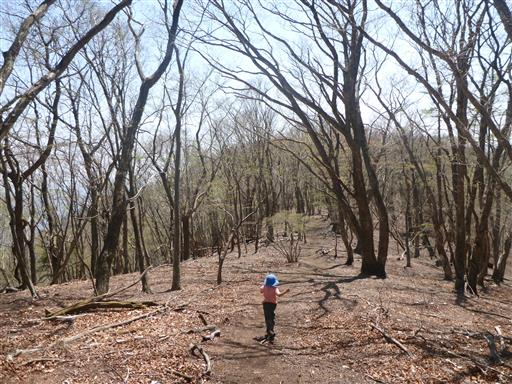
山頂らしき場所が見えると、さっきまで疲れてゆっくりだった息子のペースが
急に速くなり、あっという間に山頂の方に行ってしまう。
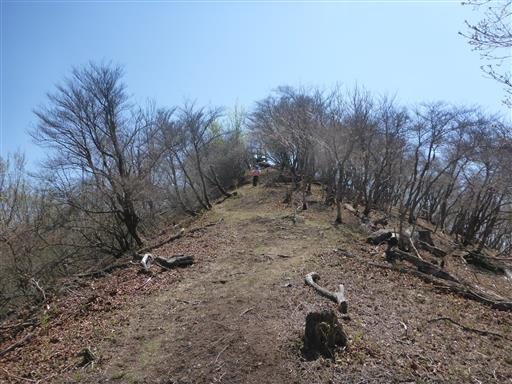
熊鷹山の山頂に到着する。標高1169m。
本日三山目の登頂だ。
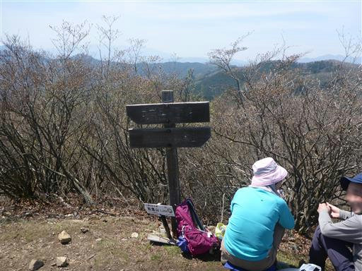
狭い山頂には展望櫓がある。
梯子も手摺も少々怖い櫓だ。
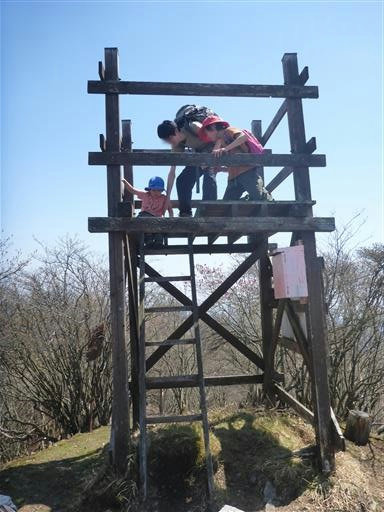
展望櫓からは360度の大展望が広がる。
右の山は男体山、左の白い山は日光白根山だ。
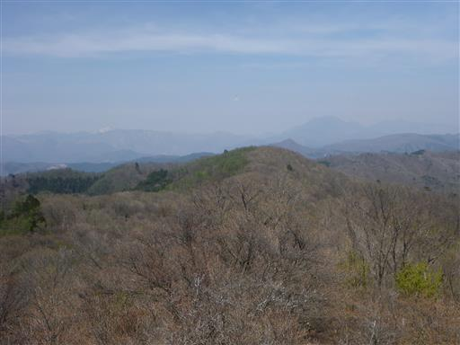
こちらは赤城山。春霞でくっきり見えないのが残念だ。
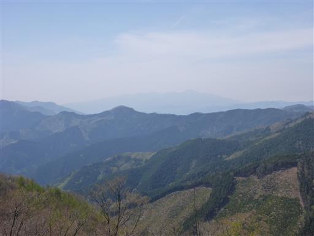
先ほど登った根本山もすぐ近くに見えている。
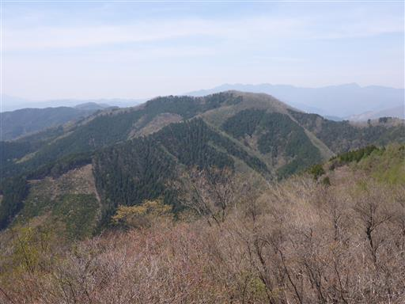
山頂で2度目の昼食をとったら下山開始。
山頂直下に見事なアカヤシオが咲いている。
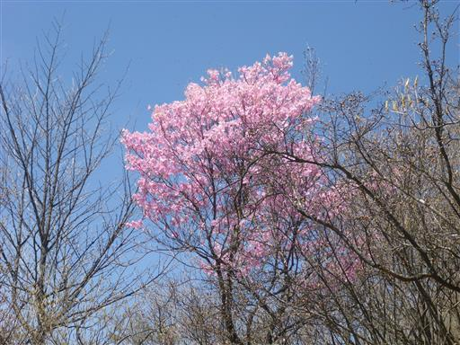
足元にはミツバツチグリの花が咲いている。

ここにも粗末な鳥居が立っている。
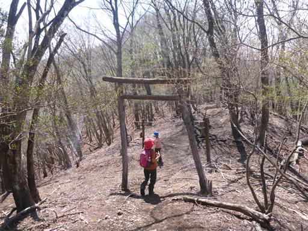
ここから急斜面の下りが続く。
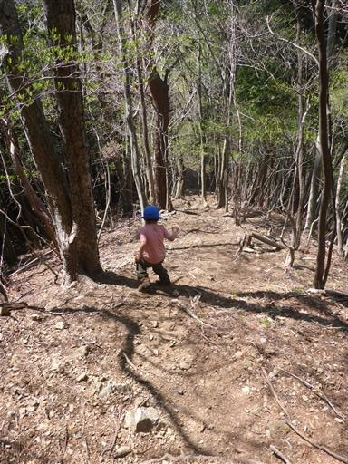
急斜面は長くは続かず、あっという間に林道に降り立つ。
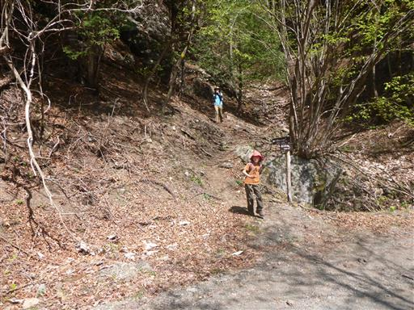
ここから1時間程度の長い林道歩きが始まる。
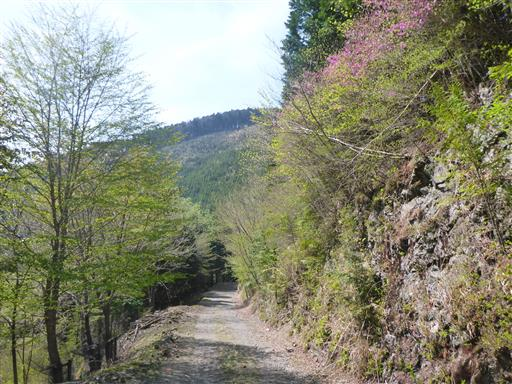
途中、水が流れているところで大きなカエルを発見。
雄と雌だが、息子がすごい勢いで近づいていくと2匹とも隠れてしまった。
周囲を見渡すとカエルはあちらこちらにいる。カエルの卵も発見。
なかにオタマジャクシの元がたくさん入っている。
水はほとんど流れていないので、このままだと干上がってしまいそうだ。
対岸の岩場の新緑が美しい。
林道の周囲の新緑も美しい。
子連れで1時間の林道歩きはつらいが、新緑がせめてもの慰めだ。
駐車場に到着したら、下の川に下りて少し川遊びする。
初めての三山縦走で息子は疲れたようだが、最後まで元気に歩き切ってくれた。
アカヤシオや新緑を満喫できた登山だった。